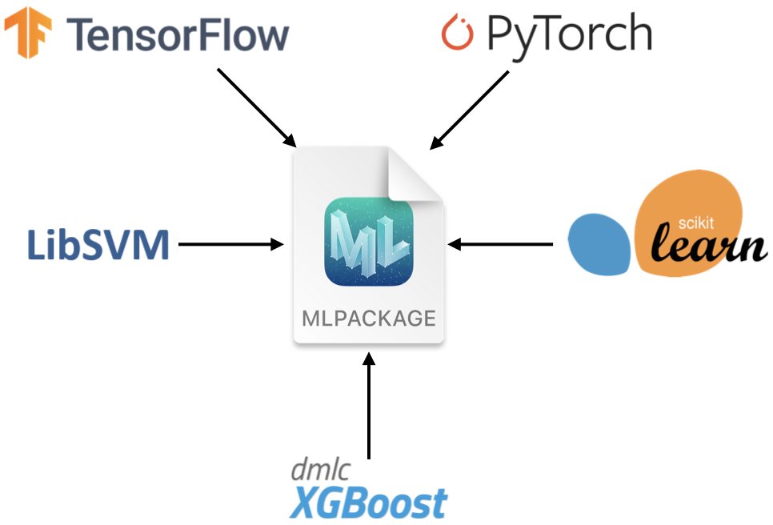

NPU、CPU和GPU
Posted on Jul.21, 2021
比喻
- GPU + TensorCore 相当于七座SUV(GPU)，某款车型后排座椅能收起来(TensorCore)放很多东西，偶尔搬点货很方便。
- NPU 相当于运载车，专业能运很多货。
- CPU + AMX 相当于一辆摩托车，大马路能跑小巷子也能钻，再加上个尾箱(AMX)就非常方便。
- 说白了，效率上就是NPU>AMX~Tensor Core>GPU>CPU。通用性反之。 此外AMX和TensorCore作为类似的东西，背后暗藏的是CPU与GPU之争
Netron
Netron supports ONNX, TensorFlow Lite, Keras, Caffe, Darknet, ncnn, MNN, PaddlePaddle, Core ML, MXNet, RKNN, MindSpore Lite, TNN, Barracuda, Tengine, TensorFlow.js, Caffe2 and UFF.
转换完后用此工具观察一下，是否有被优化、甚至跳过的层。
Core ML
- 概览 使用Core ML可以将机器学习模型集成到苹果平台(Mac/ios)的app中。 它能对CPU、GPU和苹果神经元引擎(ANE)上的模型进行优化部署，使用更小的存储和功耗。
Core ML模型的获得方式： 1. 在Xcode中直接使用Create ML app进行创建和训练，得到的模型将会是Core ML格式。 2. 可以使用各种各样的机器学习库，然后通过Core ML Tools将模型转换到Core ML格式。 3. 在1、2基础上获得的模型可以被用来重新训练或者fine-tune，在所部署的用户设备上。
Core ML支持多样的机器学习模型，包括神经网络、决策树集成、支持向量机和广义线性模型。 Core ML需要以 .mlmodel 为后缀的模型格式。 使用coremltools转换模型到Core ML.
WWDC大会上 PyTorch转CoreML的介绍
Core ML Tools Jupyter上手学习
安装： pip install coremltools==5.0b2 快速示例： 1. 下载模型 2. 转换模型 3. 设置元数据：可以便于使用Xcode预览和Xcode的其他特性 4. 进行推理 5. 保存和加载模型 6. 在Xcode中使用模型：例如部署到app中
后者是新出来的，相对原始的.mlmodel,它的结构更清晰，容器包括了：
Metadata(json), Interface/Architecture(protobuf), Learned-Parameters(binary)
转换不会改变模型的类型和运作方式。
# coremltools 5
model.save("my_model.mlpackage")
# coremltools 4
model.save("my_model.mlmodel")